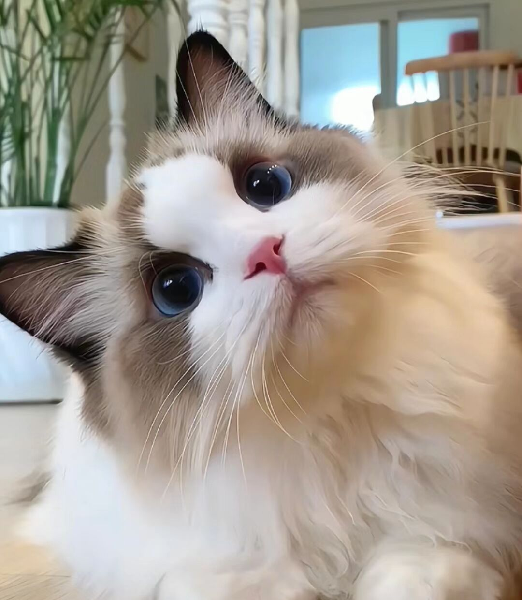
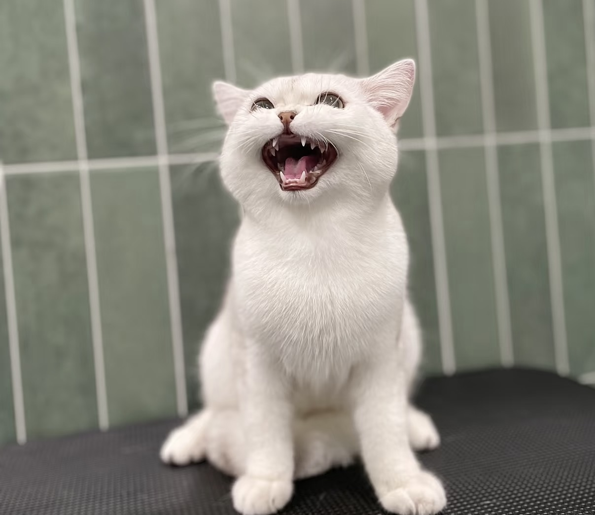
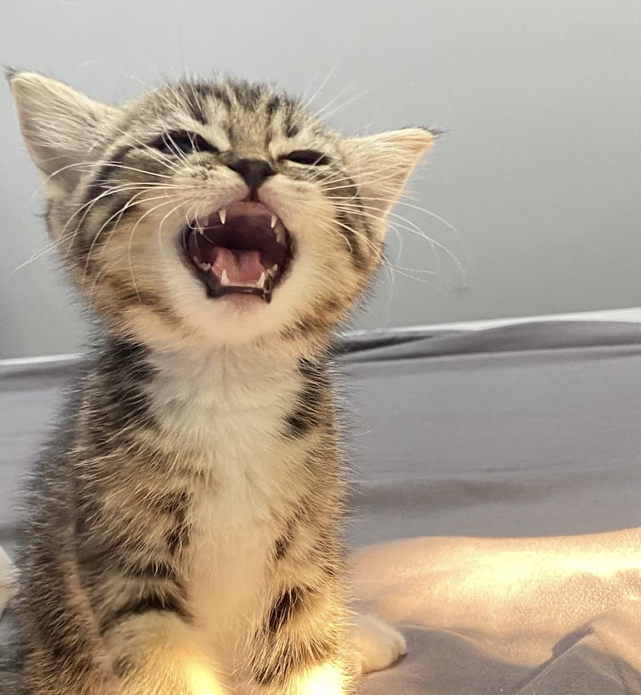
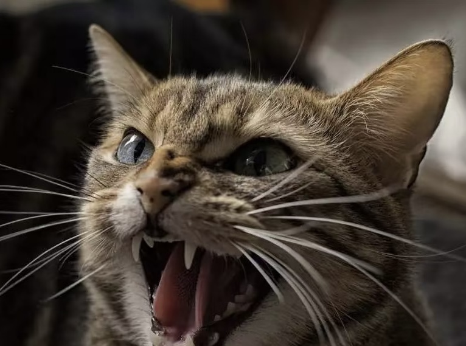

Obviously, cats also has their own languages.
But I bet you don't know the detailed method of their communications. So let's go on for learning!
The reasons of cats to communicate are variable, including the time when they are annoying, happy or sad.
It's not well-known that cats seldom communicate by voice when they are facing a cat. Only they are talking to people, they will 'meow'.
Then I'll take time on reading their vocal communications. Let's start!
Purr
This continuous voice comes from their throat, and the reason they make this sounds are not clear.
BUt often, when they're hungry or happy or anxious, it happens.
And in some cases, it is recognized as a signal to encourage the communications.
Meow
For the adult cats, they often make this sound to show they want to attract the humans' attention. But for the little, it's calling their mother.
Chirrup
Often used to call the cat or greet the cat. Also is the way mothers calling their kittens.
Chirp
When you hearing that, it most possibly is the cat is chasing the prey!
And there're also some people think it is pretending the birds or other animals hunting.
Growl, spit, hiss
They're angry!!!
While they want to kick someone off their place or feel unhappy that will lead to.
Howl, moan, and wail
It's like anger wails and growls.
While they reckon they're threaten, you'll hear that.